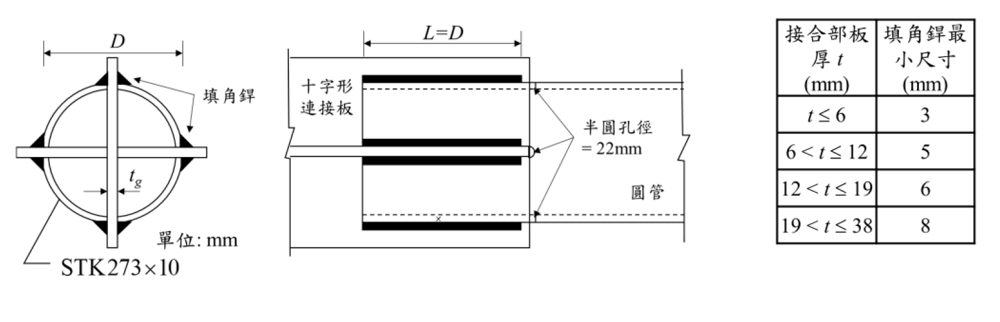
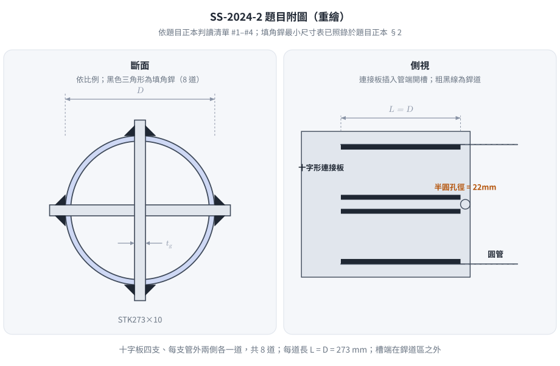
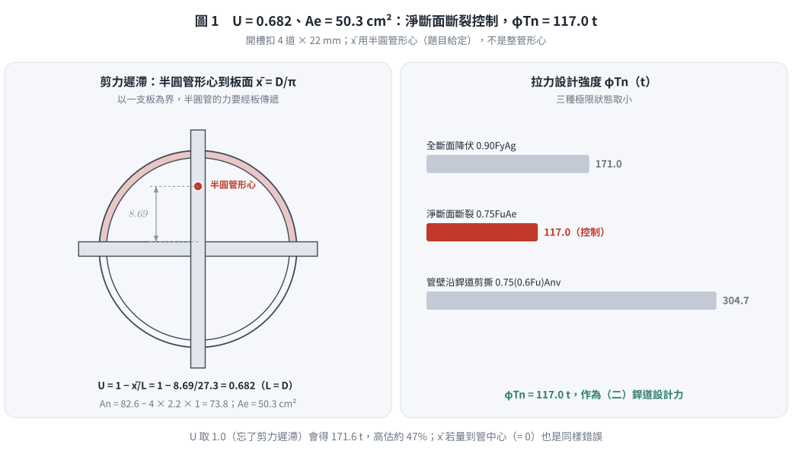
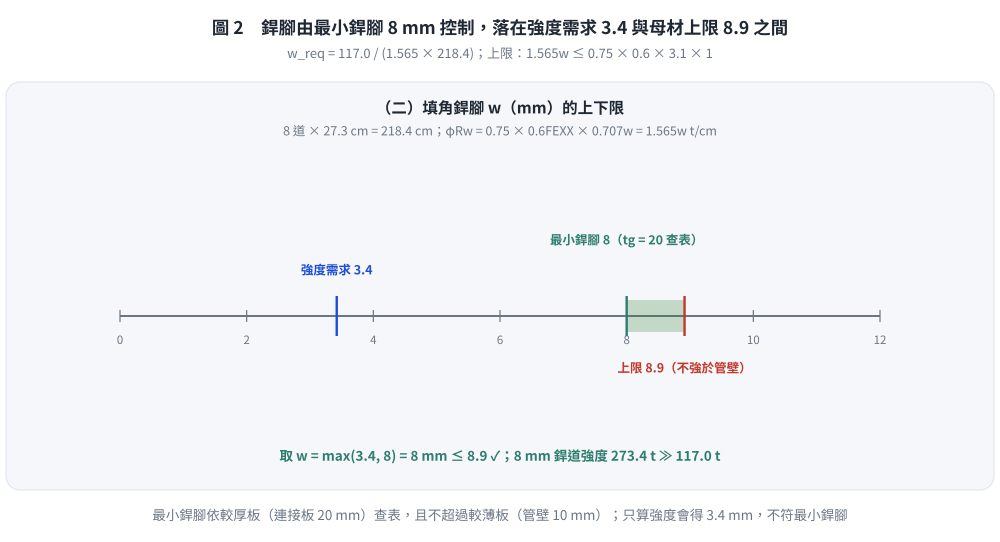

📄 題目正本：考卷原文・附圖・判讀清單（已確認）
SS-2024-2 題目正本
本檔只記錄考卷上寫了什麼、圖上畫了什麼，不含任何解法。解析見同資料夾
SS-2024-2.md。
判讀清單經使用者確認前，狀態為「待確認」；確認後本檔原則上不再修改（改動須回考卷原圖並記 log）。
| 項目 | 內容 |
|---|---|
| 考卷 | raw/exams/SS-2024_鋼結構設計.pdf 第 2 頁（頁次 4－2），第二題 |
| 考年 | 民國 113 年（2024） |
| 配分 | 25 分（㈠ 15、㈡ 10） |
| 附圖 | 1 張（圓管斷面、側視圖、填角銲最小尺寸表），SS-2024-2-fig-1.png |
| 判讀狀態 | 已確認（2026-11-02 使用者確認，含「不確定」項之解讀；轉錄同日，PyMuPDF 110 dpi 全頁＋附圖 300 dpi 局部目視，盲讀後才比對既有解析） |
1. 考卷原文（逐字）
二、下圖所示為一中空鋼管斷面拉力桿件之端部與十字形連接板之接頭，桿件預計使用 A500 Grade 50 鋼材之 STK273×10 圓管，管外徑尺寸 $D = 273$ mm，並於鋼管外側採用 E70 系列銲條之縱向填角銲道與連接板相連接，如圖所示。
㈠以極限設計法求此桿件之設計強度（$\phi_tT_n$），請詳述可能之極限狀態種類。（15 分）
㈡依前一小題之所得之設計強度為銲接之設計力，設計此接頭之銲道尺寸。（10 分）
其中 A500 Grade 50 鋼材之 $F_y = 2.3$ tf/cm²，$F_u = 3.1$ tf/cm²。圓管之斷面積 $A_g = 82.6$ cm²，十字形連接板厚 $t_g = 20$ mm。
參考公式：$U = 1 - \dfrac{\bar{x}}{L}$，$\bar{x} = \dfrac{D}{\pi}$（半圓管），$U = \dfrac{3L^2}{3L^2 + W^2}$
2. 考卷給的公式、附表與參數
- 題文：STK273×10，$D = 273$ mm，$F_y = 2.3$、$F_u = 3.1$ tf/cm²，$A_g = 82.6$ cm²，$t_g = 20$ mm，E70 銲條。
- 參考公式三條（照錄於 §1），未說明 $W$ 是什麼、第二條何時適用。
- 附圖內「填角銲最小尺寸」表：接合部板厚 $t \le 6$ → 3；$6 < t \le 12$ → 5；$12 < t \le 19$ → 6；$19 < t \le 38$ → 8（mm）。
- 沒有給 $\phi_t$、銲材強度 $F_{EXX}$ 數值與銲道 $\phi$。
- 卷首「（註：題目所列之計算公式僅供參考應自負確認與勘誤責任，另視設計需求可自行假設適用的條件等）」。
- 卷首注意事項：㈠可用計算器、㈡不必抄題、㈢除專門名詞或數理公式外應使用本國文字作答。
3. 附圖

圖面文字照錄：D；填角銲；$t_g$；單位: mm；STK273×10；L=D；十字形連接板；半圓孔徑 = 22mm；圓管；接合部板厚 t (mm)；填角銲最小尺寸 (mm)；t ≤ 6｜3；6 < t ≤ 12｜5；12 < t ≤ 19｜6；19 < t ≤ 38｜8。
4. 判讀清單
「把握」標不確定者請優先確認；解讀類項目（題目用字的意思）另標「解讀」。
| # | 項目 | 判讀 | 圖上／題文依據 | 把握 |
|---|---|---|---|---|
| 1 | 銲道數 | 十字形板四支各在管外兩側一道，共 8 道縱向填角銲 | 斷面圖 8 個三角形（300 dpi） | 確定 |
| 2 | 銲長 | 每道 $L = D = 273$ mm | 側視圖尺寸線 | 確定 |
| 3 | 開槽 | 管端沿四支板開 4 道槽，槽端為半圓、孔徑（槽寬）22 mm，槽端在銲道區之外 | 側視圖箭頭與虛線 | 確定（解讀） |
| 4 | 管壁厚 | 10 mm（STK273×10） | 斷面標示 | 確定 |
| 5 | 極限狀態範圍 | 桿件全斷面降伏、槽端淨斷面斷裂（扣開槽、乘 $U$）；連接板的極限狀態是否也要列 | 題文「此桿件之設計強度」 | 不確定 → 使用者確認：只算桿件：全斷面降伏、槽端淨斷面斷裂（本解另列管壁剪力撕裂） |
| 6 | 用哪條 $U$ | $U = 1 - \bar{x}/L$ 配半圓管 $\bar{x} = D/\pi$；第二條 $U = 3L^2/(3L^2+W^2)$ 中 $W$ 的意義與是否適用 | 參考公式未說明 | 不確定 → 使用者確認：用 $U = 1 - \bar{x}/L$、$\bar{x} = D/\pi$；第二條不用（同本解） |
| 7 | 最小銲腳查表用的 $t$ | 以較薄者（管壁 10 mm）或較厚者（連接板 20 mm）查表 | 表頭「接合部板厚」未指明 | 不確定 → 使用者確認：以較厚板（連接板 20 mm）查表 → 8 mm（同本解） |
| 8 | ㈡ 設計力 | 以㈠所得 $\phi_tT_n$ 為 8 道銲道合計的設計力 | 題文 | 確定（解讀） |
| 9 | 未給係數 | $\phi_t$、$F_{EXX}$（E70）、銲道 $\phi$ 依規範自取並註明 | 題文未給 | 確定（解讀） |
轉錄：2026-11-02（SS-U1-1 題目正本推廣・批 3）｜確認：2026-11-02 使用者確認
考題編號：SS-2024-2
主分類： SS-U1-1 拉力及壓力桿件
副分類： SS-U1-4 接合之分析與設計
設計法： LRFD
標籤： 拉力桿件 圓管HSS 縱向填角銲 剪力遲滯 U值 半圓管 淨截面斷裂 銲道設計 開槽淨面積
1. 題目（考卷原文見題目正本）
考卷原文、公式／附表、附圖與判讀清單（已確認）見
SS-2024-2-problem.md。本節只列解題時最容易讀錯的地方與本解使用的記號；題意以題目正本為準。

圖 1 題目附圖重繪（依題目正本判讀清單 #1–#4；填角銲最小尺寸表見題目正本 §2）。斷面圖畫出 8 個銲道三角形、側視圖標出 $L = D$ 與槽端位置，攔下把銲道算成 4 道或把開槽當成在銲道區內的誤讀。
常見誤讀
| 項目 | 正確判讀 | 常見誤讀 |
|---|---|---|
| 銲道數 | 四支板 × 管外兩側 = 8 道，每道 $L = D = 273$ mm | 算成 4 道 |
| 開槽 | 4 道槽、槽寬 22 mm，槽端淨斷面要扣 | 以為無孔、$A_n = A_g$ |
| $U$ | 用 $U = 1 - \bar{x}/L$、$\bar{x} = D/\pi$；第二條 $3L^2/(3L^2+W^2)$ 不用（使用者確認） | 套第二條 |
| 最小銲腳 | 以接合部較厚板（連接板 20 mm）查表 → 8 mm（使用者確認）；若以較薄板（管壁 10 mm）查表為 5 mm | 未說明用哪片板厚查表 |
本解記號： $D = 27.3$、$t = 1.0$ cm；$A_g = 82.6$ cm²；$F_y = 2.3$、$F_u = 3.1$ tf/cm²；$t_g = 20$ mm；槽寬 22 mm；$F_{EXX} = 4.92$ tf/cm²（E70）。
2. 考題核心精神與出題者意圖 (Core Concepts & Examiner's Intent)
核心觀念： 開槽圓管（slotted HSS）以縱向銲接到連接板時，受拉桿件要檢核三件事：全斷面降伏、槽端淨斷面斷裂（扣開槽面積＋剪力遲滯 $U$）、管壁沿銲道的剪力撕裂；接頭本身再檢核銲道強度與最小銲腳。
出題者測驗重點：
- 開槽要扣：管子被開了 4 道 22 mm 寬的槽，槽端那個斷面的淨面積 $A_n = A_g - 4 \times 2.2 \times t$。
- $\bar{x} = D/\pi$：題目指定以半圓管形心距計算剪力遲滯。
- 銲道數量：四支板 × 兩側 = 8 道。
- 最小銲腳：查表，以接合部板厚判斷。
3. 解題戰略地圖與陷阱分析 (Strategic Roadmap & Trap Analysis)
作戰計畫：
（一）設計強度
Step 1 全斷面降伏（GSY）：0.90 Fy Ag
Step 2 淨斷面斷裂（NSF）：An = Ag − 4·(22 mm)·t；x̄ = D/π；U = 1 − x̄/L
→ 0.75 Fu U An
Step 3 管壁沿銲道剪力撕裂：0.75 × 0.6Fu × (8·L·t)（不控制）
Step 4 取最小值 → NSF 控制，φtTn ≈ 117 t
（二）銲道設計
Step 5 8 道，總長 8L = 218.4 cm
Step 6 所需銲腳：Tu ÷ (φ·0.6FEXX·0.707 × 8L)
Step 7 最小銲腳：查表（tg = 20 mm → 8 mm）
Step 8 上限：銲道強度不超過管壁母材剪力強度
Step 9 取 8 mm
陷阱分析：
| 陷阱 | 說明 | 對策 |
|---|---|---|
| ❶ 忘了扣開槽 | 「縱向銲接、沒有螺栓孔」不等於 $A_n = A_g$；開槽端的斷面少了 4 個 22 mm 寬的槽 | $A_n = A_g - 4 \times 2.2 \times 1.0 = 73.8$ cm² |
| ❷ 銲道數量算錯 | 每支板穿出管壁時兩側各有一道銲 | 斷面圖數三角形：8 個 |
| ❸ $\bar{x}$ 誤用 $D/2$ | 半圓形心到直徑面距離是 $2r/\pi = D/\pi$ | $\bar{x} = D/\pi = 8.69$ cm |
| ❹ 誤用 $U = 3L^2/(3L^2+W^2)$ | 該式是板件縱向銲（AISC 表 D3.1 第 4 列），圓管不適用 | 圓管用 $1 - \bar{x}/L$ |
| ❺ $\phi$ 混用 | 斷裂 0.75、降伏 0.90 |
3.5 變數層次分析（Variable Hierarchy Analysis）
複習提示：解題後，在每個卡住的知識點「卡關?」欄標記
⚠；第二次複習時只看有⚠的項目。
最終目標： STK273×10 開槽圓管十字形銲接接頭：①求設計拉力強度 ②設計填角銲腳尺寸
主要公式（$\boxed{\phantom{x}}$ = 未知，待推導）
（一）設計拉力強度
$$\phi_t T_{n,GSY} = 0.90 F_y A_g$$
$$\boxed{A_n} = A_g - n_{槽}\,b_{槽}\,t,\quad \boxed{U} = 1 - \frac{D/\pi}{L},\quad \phi_t T_{n,NSF} = 0.75 F_u U A_n$$
$$\boxed{\phi_t T_n} = \min(T_{GSY}, T_{NSF}, T_{剪力撕裂})$$
（二）填角銲尺寸
$$w_{req} = \frac{T_u}{\phi(0.6F_{EXX})(0.707) \times 8L},\quad w = \max(w_{req}, w_{min}) \le w_{max}$$
L1：題目直接給定
| 符號 | 數值 | 說明 |
|---|---|---|
| $D$ | 27.3 cm | 圓管外徑 |
| $t$ | 1.0 cm | 圓管壁厚 |
| $A_g$ | 82.6 cm² | 圓管毛斷面積 |
| $F_y$、$F_u$ | 2.3、3.1 tf/cm² | A500 Gr.50 |
| $t_g$ | 20 mm | 十字形連接板厚 |
| $L$ | $D = 27.3$ cm | 銲道長度 |
| 槽寬 | 22 mm | 「半圓孔徑」 |
| 銲條 | E70 | $F_{EXX} = 70$ ksi $= 4.92$ tf/cm² |
L2：需知識點推導
| 符號 | 公式 / 來源 | 卡關? |
|---|---|---|
| $\phi_tT_{n,GSY}$ | $0.90 \times 2.3 \times 82.6 = 171.0$ t | |
| $A_n$ | $82.6 - 4 \times 2.2 \times 1.0 = 73.8$ cm² ⚠ 常漏扣 | |
| $\bar{x}$ | $27.3/\pi = 8.69$ cm | |
| $U$ | $1 - 8.69/27.3 = 0.682$ | |
| $\phi_tT_{n,NSF}$ | $0.75 \times 3.1 \times 0.682 \times 73.8 = 117.0$ t | |
| 剪力撕裂 | $0.75 \times 0.6 \times 3.1 \times (8 \times 27.3 \times 1.0) = 304.7$ t | |
| 銲道總長 | $8 \times 27.3 = 218.4$ cm ⚠ 8 道非 4 道 | |
| $\phi R_w$ | $0.75 \times 0.6 \times 4.92 \times 0.707 = 1.566$ t/cm per cm 銲腳 | |
| $w_{req}$ | $117.0/(1.566 \times 218.4) = 0.34$ cm | |
| $w_{min}$ | 8 mm（$t_g = 20$ mm） |
L3：深層知識（不懂就卡住）
| 知識點 | 說明 | 卡關? |
|---|---|---|
| 開槽圓管淨面積 | 槽端斷面扣除槽寬 × 管厚；AISC 表 D3.1 第 5 列「單一同心板的圓管」 | |
| 半圓管 $\bar{x} = D/\pi$ | 半圓弧形心到直徑面距離 $2r/\pi$ | |
| $U$ 的適用長度 | 圓管：$L \ge 1.3D$ 時 $U = 1$；$D \le L < 1.3D$ 時 $U = 1 - \bar{x}/L$ | |
| 填角銲強度 | $\phi R_n = 0.75 \times 0.6F_{EXX} \times 0.707w \times L_w$ |
4. 步驟化詳細計算過程 (Step-by-Step Calculation)
（一）拉力桿件設計強度與極限狀態
極限狀態種類
- 全斷面降伏（GSY）：管身遠離接頭處整個斷面降伏，變形過大。
- 淨斷面斷裂（NSF）：在槽端斷面，扣除開槽後的有效淨面積斷裂；因只有部分斷面（板附近）直接傳力，需以剪力遲滯係數 $U$ 折減。
- 管壁沿銲道剪力撕裂：管壁沿 8 道銲道邊緣受剪撕裂（純剪力面的塊狀撕裂，無拉力面）。
- 接頭的銲道斷裂與連接板強度屬接頭設計，在（二）及連接板設計中檢核。
Step 1：全斷面降伏
$$\phi_t T_n = 0.90 \times 2.3 \times 82.6 = 171.0\ \text{t}$$
Step 2：淨斷面斷裂
開槽淨面積（4 道槽，各寬 2.2 cm）：
$$A_n = 82.6 - 4 \times 2.2 \times 1.0 = 73.8\ \text{cm}^2$$
剪力遲滯（題目給定半圓管形心距）：
$$\bar{x} = \frac{D}{\pi} = \frac{27.3}{\pi} = 8.69\ \text{cm},\qquad U = 1 - \frac{8.69}{27.3} = 0.682$$
（$L = D$，落在 $D \le L < 1.3D$ 區間，正是 $1 - \bar{x}/L$ 的適用範圍。）
$$A_e = U A_n = 0.682 \times 73.8 = 50.3\ \text{cm}^2$$
$$\phi_t T_n = 0.75 \times 3.1 \times 50.3 = 117.0\ \text{t}$$
Step 3：管壁沿銲道剪力撕裂
$$A_{nv} = 8 \times 27.3 \times 1.0 = 218.4\ \text{cm}^2,\qquad \phi R_n = 0.75 \times 0.6 \times 3.1 \times 218.4 = 304.7\ \text{t}$$
Step 4：控制
| 極限狀態 | $\phi_t T_n$（t） |
|---|---|
| 全斷面降伏 | 171.0 |
| 淨斷面斷裂（控制） | 117.0 |
| 管壁沿銲道剪力撕裂 | 304.7 |
$$\boxed{\phi_t T_n = 117.0\ \text{t（淨斷面斷裂控制）}}$$

圖 1 剪力遲滯：半圓管形心到板面 $\bar x = D/\pi = 8.69$ cm，$U = 0.682$、$A_e = 50.3$ cm²，淨斷面斷裂控制 $\phi_tT_n = 117.0$ t。這張圖攔的是 $U$ 取 1.0、$\bar x$ 量到管中心、開槽沒扣，或只算全斷面降伏。
（二）銲道尺寸設計
設計力 $T_u = 117.0$ t。
Step 5：銲道幾何
十字形板的四支板各在管壁穿出處兩側銲接，共 8 道，每道 $L_w = 27.3$ cm：
$$\sum L_w = 8 \times 27.3 = 218.4\ \text{cm}$$
Step 6：單位長度銲道強度
$$F_{EXX} = 70\ \text{ksi} = 4.92\ \text{tf/cm}^2$$
$$\phi R_w = 0.75 \times 0.6F_{EXX} \times 0.707w = 1.566w\ \ \text{(t/cm，}w\text{ 以 cm 計)}$$
Step 7：所需銲腳
$$w_{req} = \frac{117.0}{1.566 \times 218.4} = 0.342\ \text{cm} = 3.4\ \text{mm}$$
Step 8：最小銲腳
接合部為管壁 10 mm 與連接板 20 mm。依考卷所附表以接合部板厚查：$t_g = 20$ mm 落在 $19 < t \le 38$ → 8 mm；且 8 mm 不超過較薄板（管壁 10 mm）厚度。
Step 9：上限檢核（銲道不強於管壁母材）
每道銲的管壁母材剪力強度：$0.75 \times 0.6 \times 3.1 \times 1.0 = 1.395$ t/cm
$$1.566w \le 1.395 \Rightarrow w \le 0.89\ \text{cm} = 8.9\ \text{mm}$$
Step 10：結論
$$w = \max(3.4,\ 8) = 8\ \text{mm} \le 8.9\ \text{mm}\ \checkmark$$
$$\boxed{w = 8\ \text{mm（最小銲腳控制），8 道，每道 } L = 273\ \text{mm}}$$
8 mm 銲道強度：$1.566 \times 0.8 \times 218.4 = 273.6$ t ≫ 117.0 t。

圖 2 銲腳由最小銲腳 8 mm 控制，落在強度需求 3.4 mm 與母材上限 8.9 mm 之間。這張圖攔的是只算強度需求就取 3.4 mm、最小銲腳查較薄板，或忘了銲道不強於母材的上限。（單位長度銲道強度係數精確為 0.75 × 0.6 × 4.92 × 0.707 = 1.565，解析寫 1.566，結論不變。）
5. 結果彙整與驗算 (Summary & Verification)
| 項目 | 數值 |
|---|---|
| $A_n$（扣 4 槽） | $73.8\ \text{cm}^2$ |
| $\bar{x} = D/\pi$ | $8.69\ \text{cm}$ |
| $U$ | $0.682$ |
| $A_e$ | $50.3\ \text{cm}^2$ |
| 全斷面降伏 | $171.0$ t |
| 淨斷面斷裂（控制） | $117.0$ t |
| 銲道總長（8 道） | $218.4$ cm |
| 所需銲腳 | $3.4$ mm |
| 設計銲腳 | 8 mm（最小銲腳控制） |
雙路徑驗算： 以 $\phi_tT_n = 0.75F_u(A_g - A_{槽})(1 - 1/\pi)$ 一式重算：$0.75 \times 3.1 \times 73.8 \times 0.6817 = 116.97$ t ✔。
與舊版解析的差異：
| 項目 | 舊解 | 本解 | 原因 |
|---|---|---|---|
| $A_n$ | 82.6（「無孔」） | 73.8 | 原圖「半圓孔徑 22 mm」為開槽，需扣除 |
| $\phi_tT_n$ | 130.8 t | 117.0 t | |
| 銲道數 | 4 道 | 8 道 | 斷面圖每支板兩側各一道 |
| 所需銲腳 | 7.66 mm | 3.4 mm | 設計力變小、銲道數加倍 |
| 設計銲腳 | 8 mm | 8 mm | 皆為最小銲腳控制 |
6. 依最新規範（AISC 360-16／-22）對照
| 項目 | 考卷 | AISC 360-16／-22 |
|---|---|---|
| 圓管剪力遲滯 | $U = 1 - \bar{x}/L$，$\bar{x} = D/\pi$ | 表 D3.1 第 5 列：$L \ge 1.3D$ → $U = 1.0$；$D \le L < 1.3D$ → $U = 1 - \bar{x}/L$，$\bar{x} = D/\pi$（相同） |
| 開槽淨面積 | — | §B4.3：開槽 HSS 之淨面積扣除槽寬 × 厚度 |
| 最小銲腳 | 考卷表以接合部板厚查 | 表 J2.4 自 360-10 起以較薄接合件厚度查：管壁 10 mm → 5 mm |
| 本題銲腳 | 8 mm | 依 360-16 最小 5 mm，所需 3.4 mm → 取 5 mm |
觀察： 若銲道長度加長到 $L \ge 1.3D = 35.5$ cm，$U = 1.0$，NSF 提高到 $0.75 \times 3.1 \times 73.8 = 171.6$ t，與全斷面降伏 171.0 t 幾乎相同——這就是規範設定 1.3D 門檻的用意。
修正日期：2026-11-01（依考卷原圖：「半圓孔徑 22 mm」為圓管開槽，原解以「無孔」取 $A_n = A_g$，更正為扣除 4 道槽之 $A_n = 73.8$ cm²，$\phi_tT_n$ 由 130.8 t 更正為 117.0 t；斷面圖每支板兩側各一道銲，銲道由 4 道更正為 8 道，所需銲腳 7.66 → 3.4 mm，設計銲腳仍為 8 mm；補管壁剪力撕裂檢核、極限狀態說明與 §6 對照；更正 $F_{EXX}$ 筆誤 49 → 4.92 tf/cm²）
圖解補繪：2026-11-03（向量圖 2 張，腳本 gen_SS-2024-2.py，改輸入可原地重跑；SVG 供 wiki／PDF，2× PNG 供 pptx／影片）
驗證狀態：unverified
修正日期：2026-11-02（§1 全文重述改為指向題目正本 SS-2024-2-problem.md（已確認）＋常見誤讀＋本解記號；解題內容與答案不變）
修正日期：2026-11-03（§1 補入題目附圖重繪 figs/SS-2024-2-fig-1-problem.svg（依已確認的題目正本判讀清單，腳本 gen_SS-2024-2.py，可重跑）；解題內容與答案不變）